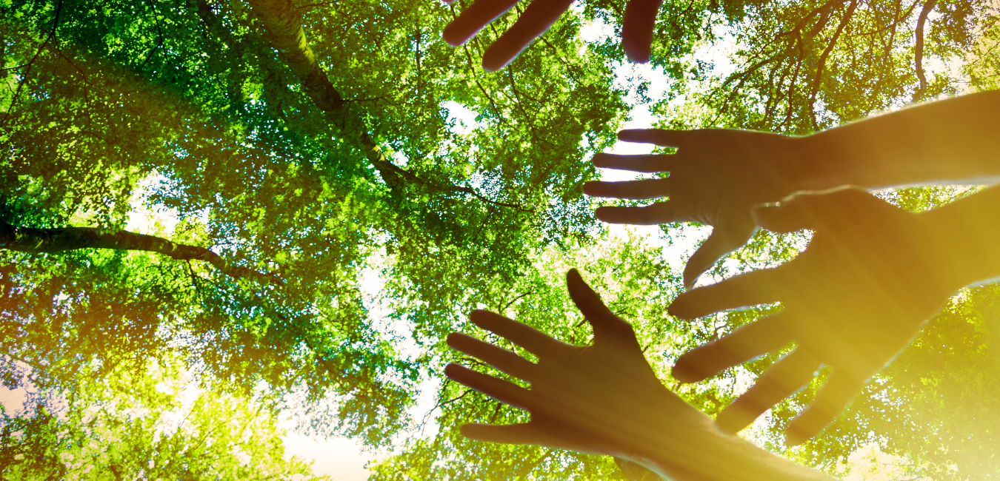
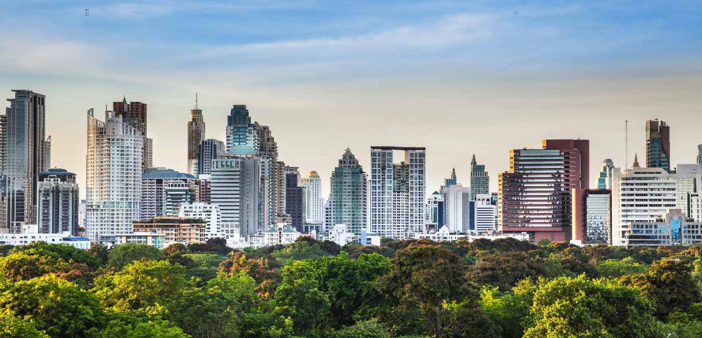

<!DOCTYPE html>
<html lang="en">
    <head>
        <meta charset="UTF-8">
        <title>Enviromental Facts</title>
    <link rel="stylesheet" href="style.css">
    <link href="//db.onlinewebfonts.com/c/ac78111d5e1e6dc73eb1aaf06ec60963?family=Debussy" rel="stylesheet" type="text/css"/>
    <link rel="preconnect" href="https://fonts.googleapis.com">
    <link rel="preconnect" href="https://fonts.gstatic.com" crossorigin>
    <link href="https://fonts.googleapis.com/css2?family=Roboto&display=swap" rel="stylesheet">
    </head>
    <body>
        <div class="header2">
            <div class="navbar">
                <div class="logo">
                    
                </div>
                <nav>
                    <ul>
                        <li><a href="Introduction Page.html">Home</a></li>
                        <li><a href="about us and our goal.html">About us and Our Goal</a></li>
                        <li><a href="Enviromental Facts.html">Enviromental Facts</a></li>
                        <li><a href="Enviromental Information.html">Enviromental Information</a></li>
                    </ul>
                </nav>
            </div>

            <div>

                <p id="title-1">
                    ENVIRONMENTAL <span style="color:rgb(47, 255, 57) ;">INFORMATION</span>
                </p>
                
                <p id="sub-title">
                    Why should we take care of our environment?
                </p>

                <p class="paragraph">
                    Our current circumstance is for sure significant for us people to endure and remain
                    alive. This is the place where we get our everyday necessities and assets which makes it
                    truly indispensable for us people. As the years progressed, a ton of things have changed.
                    There were different developments and various machines were imagined too. Our
                    population developed and as it occurs, a lot of trash was dissipated in our environmental
                     factors. Pollution emerged too, which brought about the annihilation of our planet. On
                    the off chance that we don't take great consideration of our planet at some point or
                    another, we may totally lose the spot we're living in in the present moment. That is the
                    reason, as people, we are endowed to take great minds and treasure our current
                    circumstances just as the various resources we have. With that, we should begin to
                    consider ways on the most proficient method to ensure our current circumstance. First,
                    our current circumstance is the thing that housing and assists our biological system to
                    develop and flourish. Without ensuring and dealing with our current circumstances
                    we're putting such countless lives in danger like creatures, plants, and crops, and
                    surprisingly our own. The entirety of the biological systems that make up our current
                    circumstances is profoundly associated. One change to an environment could totally
                    change everything that has been made. Second, one of the significant reasons why we
                    need to pursue protecting the climate is on the grounds that it assists with ensuring
                    humankind. On the off chance that we didn't have our current circumstance, we
                    wouldn't have a spot to live or assets to live off of. At the present time our air, food, and
                    even water are being contaminated due to various elements. Third, another tremendous
                    factor that is in danger on the off chance that we don't ensure our current circumstance
                    is the surrounding woods that we use to endure. Fourth, when you're first
                    contemplating reasons why you ought to ensure the planet, you should realize that it is
                    your ethical constraint to do as such. As a human on earth, it is your obligation to
                    ensure that it is secured. Finally, when you work to ensure the planet, then, at that point
                    you're effectively rewarding your generation. All things considered, your generation is
                    the person who is as of now utilizing it and living in it. You can likewise assist with
                    rewarding the group of people yet to come. Give them a planet and surroundings that
                    aren't harmed and show them how to keep living economically. Our current
                    circumstance is the main spot we need to live and we should need to treat it with care
                    and regard. In the event that we don't take great consideration of it at some point or
                    another, our planet Earth's condition will deteriorate until later on, we people will have
                    no planet to live on.
                </p>
            </div>

            <div>
                <p id="title-1">
                    ENVIRONMENTAL <span style="color:rgb(47, 255, 57) ;">INFORMATION</span>
                </p>
                

                <p id="sub-title">
                    Human actions that seriously harm our<br>Environment. What are its effects?
                </p>

                <p class="paragraph">
                    We, people, make use of our environment and our sources for survival. We get special
                    assets like wood, water, etc. To meet our wishes so as for us to survive on this planet.
                    With that, we make various movements that influence our surroundings. One of our
                    dreams as people should be to go away the earth in a better situation than we observed
                    it. That consists of doing as plenty as we will reduce our footprint. There is little
                    conduct we mindlessly exercise every day without even realizing the terrible effect
                    they're having on our planet. Some of the everyday duties which could doubtlessly
                    damage our environment are first, the immoderate use of plastics. We use plastics
                    almost every day, beginning from the packaging of the food we consume. Most items
                    available in grocery stores and fast meals chains are packaged in paper or plastic, not to
                    say the baggage used to carry them home. With that, the plastic that takes loads of years
                    to decompose affects no longer the simplest of our environment but additionally the
                    alternative species right here on this planet that intakes plastics which can be thrown
                    everywhere. Plastic cannot be absorbed by the surroundings and a big quantity winds up
                    inside the ocean which is a scenario that is dangerous to water organisms, wildlife, and
                    humans. Next, quite a few of us are guilty of this however leaving the lights on is bad
                    for our surroundings and wastes a lot of energy too. Using much less energy reduces the
                    variety of poisonous fumes emitted by electricity. That's due to the fact maximum plants
                    burn coal, fossil gasoline, or crude oil to generate power. So turning out the lighting will
                    keep your power invoice and the surroundings. Lastly, the flushing of the restroom may
                    be a waste too. The motive at the back of this is that the Environmental Protection
                    Agency (EPA) found out that bathrooms made before 1980 on common use five gallons
                    of water according to flush. And bathrooms, in trendy, use 30% extra water than
                    anything else in our houses. If not necessarily needed, we suggest using bathroom paper
                    as an opportunity and most effectively use the flush inside the bathroom when wished.
                    There is nevertheless a lot of human conduct and activities that don’t appear harmful
                    but it actually is. Most of the time, we sincerely don’t observe these and some of us
                    aren’t even conscious about it.
                    <br>
                    <br>
                    <br>
                    Here in Greenology, we inspire students in addition to other humans, to try their best
                    and spread factual awareness and information to everyone. A lot of options can be used
                    that could lessen the impact of our movements on our surroundings. Together, let us
                    build a secure place to live in and be more careful of our actions. We must constantly
                    remember the fact that everything that we do has consequences and can severely affect
                    us and future generations as well.
                </p>
            </div>

            <div>
                <p id="title-1">
                    SOURCES:
                </p>

                <ul class="paragraph1">
                    <li>
                        22 Fun & Interesting Facts about the environment. Eco Friendly Habits. (2021, June 30). Retrieved October 4, 2021,
                        from https://www.ecofriendlyhabits.com/environmental-facts/.
                    </li>

                    <li>
                        The world counts. (n.d.). Retrieved October 4, 2021, from
                        https://www.theworldcounts.com/stories/amazing_environmental_facts.
                    </li>

                    <li>
                        Why should we protect the environment? 5 reasons everyone should work toward a better future. KTVN Channel
                        2 - Reno Tahoe Sparks News, Weather, Video. (n.d.). Retrieved October 4, 2021, from
                        https://www.ktvn.com/story/41618546/why-should-we-protect-the-environment-5-reasons-everyone-shouldwork-toward-a-better-future.
                    </li>
                    <li>
                        Why should we protect the environment? 5 reasons everyone should work toward a better future. KTVN Channel
                        2 - Reno Tahoe Sparks News, Weather, Video. (n.d.). Retrieved October 4, 2021, from
                        https://www.ktvn.com/story/41618546/why-should-we-protect-the-environment-5-reasons-everyone-shouldwork-toward-a-better-future
                    </li>
                </ul>

                

            </div>

        </div>
    </body>
</html>